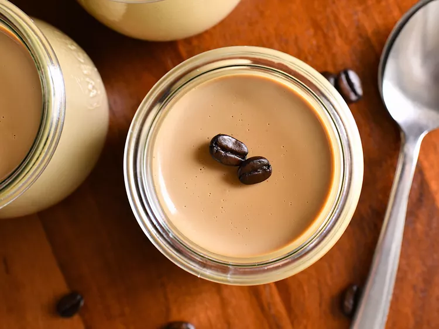

This coffee panna cotta is a light, yet decadent dessert that's incredibly
easy to make. If you really want to take it over the top, serve it topped
with a dollop of mascarpone whipped cream and a sprinkle of chopped
chocolate.
Ingredients
- 2 cups heavy cream
- 1/2 cup brewed black coffee
- 1/2 cup firmly packed brown sugar
- 1 tablespoon instant espresso powder
- 1 1/2 teaspoons vanilla extract
- 1/4 teaspoon kosher salt
- 1/2 cup whole milk
- 1 (0.25 ounce) packet unflavored powdered gelatin
Steps
-
Whisk heavy cream, coffee, brown sugar, espresso powder, salt, and
vanilla together in a saucepan. Heat over medium-low heat, stirring
often, until mixture is hot and sugar and espresso powder have
dissolved, 5 to 7 minutes; do not boil.
-
Meanwhile, place 1/2 cup whole milk in a small bowl. Sprinkle gelatin
over the top and let sit for 5 minutes to allow gelatin to bloom.
-
Remove the pan from the heat. Whisk in bloomed gelatin and stir until
completely dissolved and incorporated.
-
Place a fine mesh strainer over a large heat-safe measuring cup, or a
large bowl, preferably with a pour spout. Carefully pour coffee mixture
through the strainer.
-
Pour strained coffee mixture into glass serving dishes or ramekins, and
allow to cool to room temperature, about 30 minutes. Then place panna
cottas into the fridge to chill until set, about 4 hours.
HOME